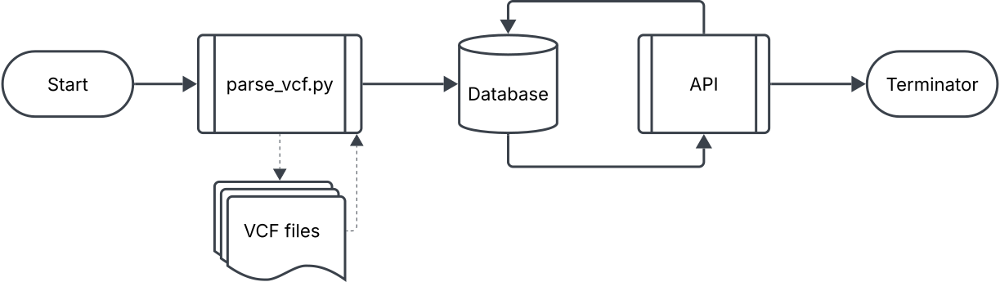
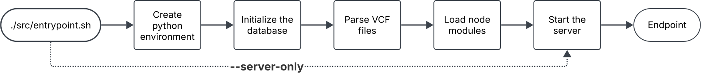
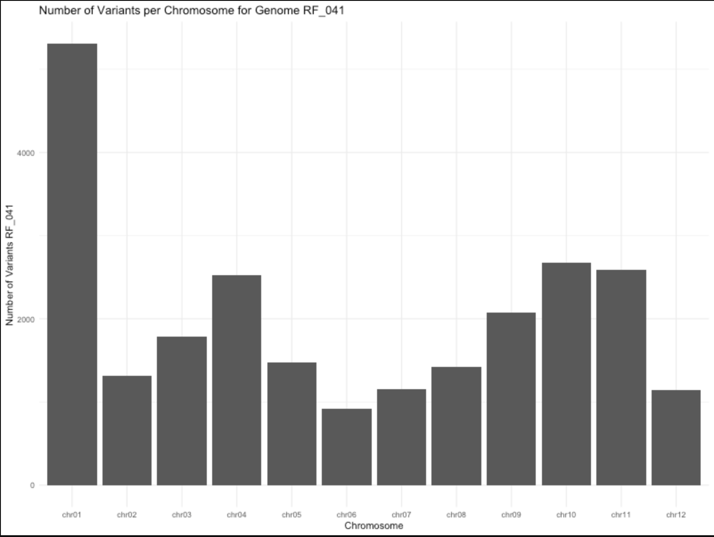

Technical Documentation is best viewed from GitHub. See https://github.com/ms2206/GenomeVarAPI/tree/main.
GenomeVarAPI is a linux-based tool for parsing and interacting with VCF (Variant Call Format) files. The tool has 3 elements: a python parsing module, an sqlite database, and a REST API for end-user interface.
The tool is not guaranteed to work on Windows PC and makes no claims to be platform independent.

Tool Dependencies: Python, Node.js, npm. Please install these dependencies before running the tool. For assistance refer to: API Technical Documentation.
GitHub clone:
git clone https://github.com/ms2206/GenomeVarAPI.gitChange directory:
cd GenomeVarAPIRun the entrypoint.sh:
Usage: ./src/entrypoint.sh [--server-only]Description: This script acts as a wrapper to start the application.
The script checks if the required python environment exists, if not, it
creates the environment. It then initializes the SQLite database, parses
VCF files, installs the node dependencies and starts the Node.js server.
The –server-only option is useful if you just want to
load the server without re-populating the database. This option assumes
node the node packages are already installed.
Any VCF files placed in the ./data.raw directory will be
parsed by the tool upon initialization. The current release supports
parsing VCF files annotated using SnpEff legacy ‘EFF’ format. The ‘ANN’
is not yet supported but will be made available in a future release.
Considering gene annotations, the tool is limited to extracting gene
names for ‘mRNA’ labeled genes, a future release will expand on these
capabilities.
Note: if your annotations do not follow this
format the tool should still complete but their annotations and gene
names will not be entered into the database
Flowchart for entrypoint.sh:

TODO: Add docker image. use ./src/entrypoint.sh as a wrapper.
Upon running the entrypoint script you shall have a server running on
http://localhost:3000.
The API has 8 main endpoints:
api/genomes
api/genomes/:genome_id
api/genomes/:genome_id/variants
api/genomes/:genome_id/snps
api/genomes/:genome_id/indels
api/genomes/:genome_id/:chromosome_id/:mbp?
api/variants/gene/:gene_name
api/variants/:genome_id
http://localhost:3000/api/genomes
http://localhost:3000/api/genomes/RF_041/
http://localhost:3000/api/genomes/RF_001/variants
http://localhost:3000/api/genomes/RF_001/snps
http://localhost:3000/api/genomes/RF_001/indels
:mbp is an optional parameter to be the number of mbp from the
start of the chromosome. If NULL then the whole chromosome will be
shown.
http://localhost:3000/api/genomes/RF_001/chr03/20
http://localhost:3000/api/variants/gene/Solyc03g006480.1.1
http://localhost:3000/api/variants/RF_041A beta version of an API is available for users to visualize data from their VCF files. This feature is currently in beta release and has been intentionally kept separate from the main API hosted at http://localhost:3000. This decision was made to allow for thorough testing and to ensure the stability of the Plumber API. Once testing is complete, the Plumber API will be integrated into the main server. In the meantime, a separate wrapper can be used to initialize this Plumber server.
R
To start this server:
Rscript src/utils/wrapper_plummer.R
src/api/plumber_API.R
Navigate to the Swagger API:
http://127.0.0.1:3001/__docs/__
OR
Navigate to the local API:
Running plumber API at
http://127.0.0.1:3001
http://127.0.0.1:3001/count_variants?genome_id=<GENOME_ID>

Support Email:
For general inquiries and technical support
contact: matspriggs@gmail.com
Social Media:
LinkedIn